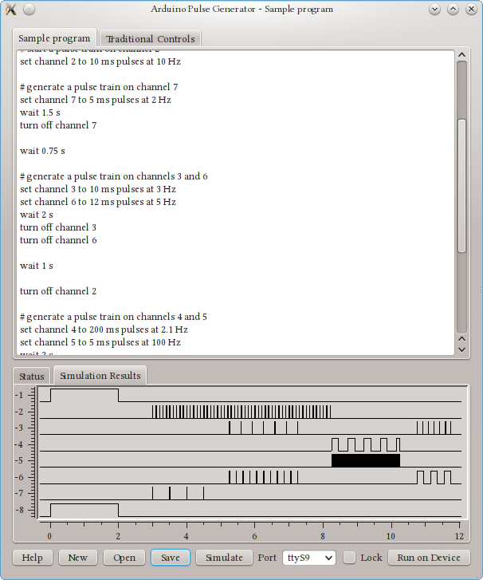
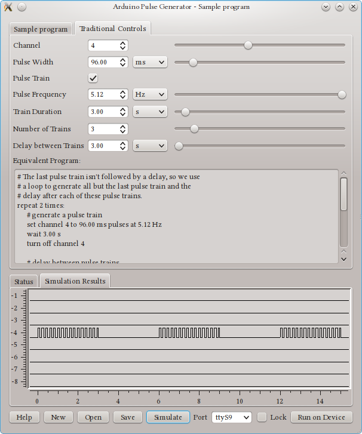

ArduinoPulseGenerator is a simple program for generating pulse sequences using an Arduino. There is an associated GUI that runs on the local computer, or you can simply connect to the Arduino with a serial console (9600 baud) and send it commands. This code has been tested on the ArduinoMega 2560 (timing accuracy ~ ±200 μs) and Arduino Due (timing accuracy ~ ±35 μs); it may work on other Arduino boards but this has not been tested.
Screen Shots


Building
Instructions on building the firmware and user interface can be found in the README.rst included with the source code.
Usage
Pulse sequences are defined by simple programs. For example, the following program will generate 15 ms pulses on channel 1 for 3 seconds:
set channel 1 to repeat 15 ms pulses at 10 Hz
wait 3 s
turn off channel 1
end program
Channels 1 through 8 are mapped to Arduino pins 2, 3, 4, 5, 8, 9, 10, and 11 respectively.
For more information, see the ArduinoPulseGenerator manual.
License
ArduinoPulseGeneratorGui is free software; you can redistribute it and/or modify it under the terms of the GNU General Public License (GPL), version 3 or (at your option) any later version.